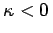

Inhalt Index DeskTop Bronstein

 Lineare Integralgleichungen Singuläre Integralgleichungen Singuläre Integralgleichungen mit Cauchy-Kernen Lösung des Hilbertschen Randwertproblems
Lineare Integralgleichungen Singuläre Integralgleichungen Singuläre Integralgleichungen mit Cauchy-Kernen Lösung des Hilbertschen Randwertproblems


Die Lösung des inhomogenen HILBERTschen Problems lautet:
mit
Ist , dann müssen für die Existenz einer Lösung überdies die Forderungen
erfüllt sein.